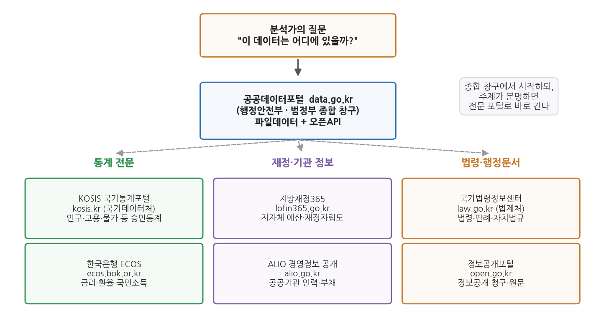
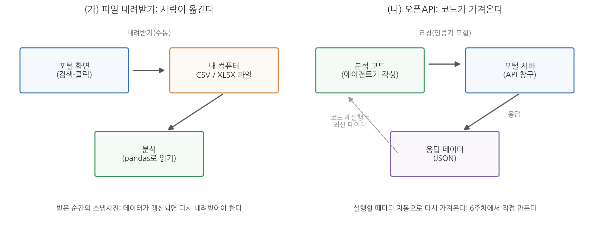

5주차 1회차. 공공데이터 생태계
이 법은 공공기관이 보유·관리하는 데이터의 제공 및 그 이용 활성화에 관한 사항을 규정함으로써 국민의 공공데이터에 대한 이용권을 보장하고, 공공데이터의 민간 활용을 통한 삶의 질 향상과 국민경제 발전에 이바지함을 목적으로 한다. (「공공데이터의 제공 및 이용 활성화에 관한 법률」 제1조)
이 장에서 배우는 것
4주차까지 우리는 작업대를 차렸다. VSCode 안에 Claude Code가 들어왔고, uv로 파이썬 환경을 갖췄고, CSV 하나를 읽어 요약통계까지 뽑아 보았다. 도구는 준비되었다. 이제 필요한 것은 재료, 곧 데이터다.
그런데 막상 재료를 구하러 나서면 첫 질문부터 막힌다. 과장이 "우리 시 재정자립도가 다른 시보다 낮다는데 확인해 줄래요?"라고 했다고 하자. 재정자립도라는 숫자는 어디에 있는가. 포털 검색창에 치면 나오는가. 나온다면 그 숫자는 누가 만들었고, 어느 시점 기준이고, 내가 보고서에 옮겨 써도 되는 것인가. 한국의 공공데이터는 한 곳에 모여 있지 않다. 여러 기관이 저마다의 창구로 데이터를 내놓고 있어서, 어디에 무엇이 있는지 아는 것 자체가 분석가의 실력이 된다.
이 장은 그 지도를 그린다. 구체적으로 다음을 배운다.
- 정부가 왜 데이터를 공개하는지, 그리고 그것을 뒷받침하는 법이 무엇인지
- 한국 공공데이터의 주요 창구 일곱 곳과 각각의 성격
- 데이터가 담겨 오는 그릇, 곧 CSV·XLSX·JSON·오픈API의 차이
- 숫자보다 먼저 읽어야 할 메타데이터와 코드북
- 받은 데이터를 어디까지 써도 되는지 (이용허락)
이 장은 데이터를 구하는 사람의 질문 순서를 그대로 따라간다. "왜 공개되어 있나(제도) → 어디에 있나(지도) → 어떤 모양으로 오나(형식) → 이 숫자는 무슨 뜻인가(메타데이터) → 써도 되나(이용허락)"
1.1 개방형 정부와 공공데이터법을 이해한다 → 1.2 일곱 개 포털의 지도를 그린다 → 1.3 CSV·XLSX·JSON·오픈API를 구분한다 → 1.4 메타데이터와 코드북 읽는 법을 익힌다 → 1.5 이용허락(공공누리)과 유의점을 확인한다.
1.1 개방형 정부와 공공데이터법: 데이터는 왜 공개되는가
세금으로 만든 데이터는 누구의 것인가
행정기관은 일하는 것만으로 데이터를 만든다. 주민등록 전출입 신고가 쌓이면 인구이동 데이터가 되고, 예산을 편성하고 집행하면 재정 데이터가 되고, 민원이 접수되면 민원 데이터가 된다. 이 데이터를 만드는 비용은 모두 세금에서 나왔다. 그렇다면 이 데이터는 그것을 만든 기관의 소유물인가, 아니면 비용을 댄 국민의 것인가.
오랫동안 현실의 답은 전자에 가까웠다. 데이터는 기관 내부의 업무 자료였고, 국민이 보려면 개별적으로 요청해서 허락을 받아야 했다. 이 구조를 처음 바꾼 것이 정보공개 제도다. 「공공기관의 정보공개에 관한 법률」에 따라 국민은 공공기관이 보유한 정보의 공개를 청구할 권리를 가진다. 다만 이 제도는 기본적으로 청구 기반이다. 국민이 "이 문서를 보여 달라"고 신청하면 기관이 심사해서 공개 여부를 결정하는 방식이므로, 무엇이 있는지 모르면 청구할 수도 없고, 공개된 자료도 대개 한 건의 문서 형태다.
2000년대 후반부터 세계적으로 한 걸음 더 나아간 흐름이 나타났다. 국민이 청구하기를 기다리지 말고, 정부가 보유한 데이터를 기계가 읽을 수 있는 형태로 먼저 내놓자는 것이다. 이런 방향의 정부 운영 철학을 개방형 정부(open government)라 부르고, 그렇게 개방된 데이터를 오픈데이터(open data)라 부른다. 미국의 data.gov, 영국의 data.gov.uk 같은 국가 개방 포털이 이 흐름 속에서 만들어졌다.
개방형 정부(open government)는 정부가 보유한 정보와 데이터를 국민에게 적극적으로 공개하고, 국민의 참여와 감시를 정부 운영의 기본으로 삼는 접근이다.
공공데이터(public data)의 법률상 정의는 "데이터베이스, 전자화된 파일 등 공공기관이 법령 등에서 정하는 목적을 위하여 생성 또는 취득하여 관리하고 있는 광(光) 또는 전자적 방식으로 처리된 자료 또는 정보"다(공공데이터법 제2조). 쉽게 말해 공공기관이 일하면서 만들어 전자적으로 보관 중인 자료 전부가 잠재적 공공데이터다.
공공데이터법: 개방을 의무로 만든 법
한국에서 이 흐름을 제도로 못 박은 것이 2013년 제정된 「공공데이터의 제공 및 이용 활성화에 관한 법률」(법률 제11956호)이다. 보통 줄여서 공공데이터법이라 부른다. 이 법의 핵심은 관점의 역전이다. 장 첫머리에 인용한 제1조가 말하듯, 이 법은 공공데이터 이용을 국민의 권리(이용권)로 규정한다. 기관이 선심 쓰듯 내주는 것이 아니라, 국민이 당연히 쓸 수 있어야 하는 것으로 자리를 바꾼 것이다.
이 법의 기본원칙(제3조) 가운데 분석가에게 특히 중요한 것이 셋 있다.
- 누구나 이용할 수 있다. 공공기관은 국민이 편리하게 공공데이터를 이용할 수 있도록 해야 하며, 이용자를 차별해서는 안 된다.
- 일반에 공개된 데이터의 접근을 막을 수 없다. 이미 개방된 공공데이터에 대해 기관이 임의로 접근을 제한할 수 없다.
- 영리 목적 이용도 막지 않는다. 공공데이터로 창업을 하든 논문을 쓰든 수업 과제를 하든, 원칙적으로 이용 목적을 이유로 거절당하지 않는다.
법은 개방의 실무 체계도 만들었다. 각 기관은 보유 데이터의 목록을 등록하고 개방 계획을 세우며, 범정부 차원에서는 공공데이터전략위원회가 정책을 심의·조정한다. 그리고 개방된 데이터가 모이는 대표 창구로 공공데이터포털(data.go.kr)이 운영된다. 여러분이 원하는 데이터가 목록에 없으면 제공을 신청할 수도 있고, 기관이 정당한 이유 없이 거절하면 분쟁조정을 요청하는 절차까지 마련되어 있다.
청구를 기다리지 않고 먼저 개방하는 데는 실용적 계산이 있다. 첫째, 경제적 가치다. 버스 도착 정보, 부동산 실거래가, 날씨 데이터가 개방되자 이를 활용한 앱과 서비스가 쏟아졌다. 데이터는 쓰는 사람이 많아져도 닳지 않으므로, 개방의 편익은 복제 비용 없이 늘어난다. 둘째, 신뢰와 감시다. 예산과 결산이 공개되면 "어디에 얼마를 썼는가"를 시민이 직접 확인할 수 있다. 셋째, 행정 효율이다. 청구가 들어올 때마다 건건이 심사해 답하는 것보다, 수요가 많은 데이터를 한 번 개방해 두는 편이 기관 입장에서도 싸게 먹힌다. 요컨대 개방은 시혜가 아니라 투자에 가깝다.
이 제도 덕분에 여러분은 특별한 자격 없이도, 학생 신분 그대로, 이 과목의 모든 분석 재료를 합법적으로 구할 수 있다. 문제는 권리가 아니라 길찾기다. 다음 절에서 지도를 그린다.
1.2 공공데이터 지도: 어디에 무엇이 있는가
한국의 공공데이터 창구는 여러 곳이다. 처음에는 이것이 불편하게 느껴지지만, 각 창구의 성격을 알고 나면 오히려 빠르다. 도서관에 종합자료실과 전문자료실이 나뉘어 있는 것과 같다. 무엇이든 일단 찾아보는 종합 창구가 하나 있고, 주제가 분명할 때 바로 가는 전문 창구들이 있다.

그림 5-1이 이 장의 핵심 지도다. 읽는 법은 이렇다. 맨 위의 질문("이 데이터는 어디에 있을까?")에서 출발해, 가운데의 종합 창구인 공공데이터포털을 먼저 떠올린다. 그러나 질문의 주제가 분명하면 아래 세 묶음, 곧 통계 전문(KOSIS, ECOS), 재정·기관 정보(지방재정365, ALIO), 법령·행정문서(국가법령정보센터, 정보공개포털)로 바로 간다. 이 그림에서 알 수 있는 것은, 포털이 일곱 개나 되는 것이 무질서해서가 아니라 데이터의 성격이 다르기 때문이라는 점이다. 통계는 통계를 만드는 기관이, 재정은 재정을 관리하는 기관이, 법령은 법령을 관장하는 기관이 가장 정확한 원천이다.
표 5-1. 주요 공공데이터 포털 일곱 곳
| 포털 | 주소 | 운영 | 무엇이 있나 | 이런 질문일 때 |
|---|---|---|---|---|
| 공공데이터포털 | data.go.kr | 행정안전부 | 범정부 개방 데이터 (파일데이터, 오픈API) | "일단 있는지부터 찾아보자" |
| KOSIS 국가통계포털 | kosis.kr | 국가데이터처(옛 통계청) | 인구·고용·물가 등 국가승인통계 | "공식 통계 수치가 필요하다" |
| 한국은행 경제통계시스템(ECOS) | ecos.bok.or.kr | 한국은행 | 금리·환율·통화·국민소득·국제수지 | "거시경제 지표가 필요하다" |
| 지방재정365 | lofin365.go.kr | 행정안전부 | 지자체 예산·결산, 재정자립도 등 재정지표 | "우리 시 살림살이를 보고 싶다" |
| ALIO 공공기관 경영정보 공개시스템 | alio.go.kr | 재정경제부(옛 기획재정부) | 공공기관 임직원·보수·부채 등 경영공시 | "공공기관이 궁금하다" |
| 국가법령정보센터 | law.go.kr | 법제처 | 법령·판례·행정규칙·자치법규 | "근거 조문을 확인해야 한다" |
| 정보공개포털 | open.go.kr | 행정안전부 | 정보공개 청구, 공개된 행정문서 | "개방 안 된 자료를 요청하고 싶다" |
이제 하나씩 성격을 짚는다. 화면 구성이나 메뉴 이름은 개편 때마다 바뀌므로 외울 필요가 없다. 각 포털이 "무엇을 위한 곳인가"만 기억하면 된다.
공공데이터포털(data.go.kr). 행정안전부가 운영하는 범정부 종합 창구다. 중앙부처, 지자체, 공공기관이 개방한 데이터가 수만 건 등록되어 있고, 크게 두 형태로 제공된다. 내려받는 파일데이터와, 프로그램으로 호출하는 오픈API다(1.3절에서 구분한다). 검색창에 "어린이집", "CCTV", "무더위쉼터"처럼 생활어를 넣어도 관련 데이터셋이 걸려 나오는 것이 장점이다. 원하는 데이터가 없으면 제공 신청을 할 수 있다는 점도 기억해 두자.
KOSIS 국가통계포털(kosis.kr). 국가데이터처(옛 통계청)가 운영하는 통계 전문 포털로, 국가승인통계가 주제별·기관별로 정리되어 있다. 공공데이터포털이 "기관들이 내놓은 것을 모아 둔 시장"이라면, KOSIS는 "품질 관리를 거친 공식 통계의 서고"에 가깝다. 인구총조사, 인구동향(출생·사망), 고용, 물가처럼 이 과목에서 자주 쓰는 데이터가 대부분 여기에 있다. 우리가 실습에서 쓰는 sigungu_2023.csv의 원천 통계(주민등록인구, 합계출산율)도 KOSIS에서 수집한 것이다.
한국은행 경제통계시스템 ECOS(ecos.bok.or.kr). 한국은행이 운영하며, 한국은행이 직접 작성하는 통계(통화·금융, 국민소득, 국제수지)를 중심으로 국내외 여러 기관의 경제통계를 모아 제공한다. 기준금리, 환율, GDP 같은 거시지표의 시계열이 필요할 때 가장 정확한 원천이다. 예를 들어 "지역내총생산과 지방재정의 관계"를 본다면 한 축은 ECOS나 KOSIS에서, 다른 축은 지방재정365에서 가져오게 된다.
지방재정365(lofin365.go.kr). 행정안전부의 지방재정 통합공개시스템이다. 지방자치단체의 예산·결산 내역과 재정자립도 같은 재정지표를 유사 자치단체끼리 비교할 수 있게 공개한다. 앞의 "우리 시 재정자립도" 질문의 답이 있는 곳이 바로 여기다. 행정학 전공자에게는 앞으로 가장 자주 드나들 포털 중 하나가 될 것이다.
ALIO 공공기관 경영정보 공개시스템(alio.go.kr). 재정경제부(옛 기획재정부)가 운영하며, 공기업·준정부기관 등 공공기관의 경영정보(임직원 수, 평균 보수, 부채, 채용 현황 등)를 공시한다. 지자체가 아니라 공공기관이 분석 대상일 때 가는 곳이다. "공공기관 신입 초임은 기관 유형별로 얼마나 다른가" 같은 질문의 재료가 있다.
국가법령정보센터(law.go.kr). 법제처가 운영하는 법령 정보의 원천이다. 법률, 시행령, 행정규칙, 자치법규, 판례를 한곳에서 검색할 수 있다. 숫자 데이터는 아니지만 공공데이터 분석에서 뜻밖에 자주 쓰인다. 데이터의 열 이름에 등장하는 제도 용어(예: "재정자립도"의 산식, "공공기관"의 범위)가 법령과 규칙에 정의되어 있기 때문이다. 이 교재 후반(11-12주차)에서 법령·문서 텍스트를 직접 분석 재료로 쓰기도 한다.
정보공개포털(open.go.kr). 행정안전부가 운영하는 정보공개 청구 창구다. 앞의 여섯 포털이 "이미 개방된 것"을 다룬다면, 여기는 "아직 개방되지 않은 것"을 요청하는 곳이다. 온라인으로 청구서를 내면 해당 기관이 원칙적으로 10일 이내에 공개 여부를 결정한다. 다른 기관이 이미 청구해 공개된 문서를 열람할 수도 있다. 분석에 필요한 데이터가 어느 포털에도 없을 때 남는 마지막 카드다.
포털들은 수시로 개편된다. 메뉴 이름이 바뀌고, 검색 화면이 새로워지고, 주소가 통합되기도 한다. 기관 이름도 바뀐다. 통계청이 국가데이터처로 개편된 것처럼, 이 표의 운영 기관명도 언젠가 달라질 수 있다. 그래서 이 장에서 외울 것은 "어느 메뉴를 몇 번 클릭하는가"가 아니라 "이런 성격의 데이터는 이런 성격의 기관이 낸다"는 구조다. 구조를 알면 화면이 바뀌어도 3분 안에 다시 길을 찾는다.
1.3 데이터 형식 읽기: CSV, XLSX, JSON, 오픈API
포털에서 데이터를 받으려는 순간, 선택지가 나타난다. 같은 데이터가 CSV, XLSX, JSON 같은 여러 형식으로 제공되고, 파일 대신 "오픈API 활용신청"이라는 버튼이 있기도 하다. 이들은 데이터를 담는 그릇의 차이다. 내용물이 같아도 그릇에 따라 다루는 법이 달라진다.
CSV(comma-separated values, 쉼표로 구분된 값). 가장 단순하고, 분석에서 가장 사랑받는 형식이다. 정체는 그냥 텍스트 파일이다. 첫 줄에 열 이름을 쓰고, 그다음 줄부터 한 줄에 한 행씩, 값들을 쉼표로 구분해 늘어놓는다. 우리가 쓰는 sigungu_2023.csv의 실제 첫 두 줄은 이렇다.
시도,시군구,총인구,면적,인구밀도,인구증가율,고령,생산가능,유소년,고령인구비율,합계출산율,출생아수
강원,강릉시,211381.0,1040.82745,201.2235549683,-0.92,51700.0,137876.0,19863.0,24.45820579900748,0.846,826.0
메모장으로 열어도 읽히고, 엑셀로 열면 표로 보이고, pandas로 읽으면 곧바로 분석할 수 있다. 서식(색, 병합, 수식)이 없다는 것이 단점이 아니라 장점이다. 꾸밈이 없으니 어떤 프로그램에서든 오해 없이 읽힌다.
XLSX. 엑셀의 저장 형식이다. 사람이 보기 좋게 만든 표에 적합하고, 실제로 행정기관 자료실의 파일 상당수가 이 형식이다. 다만 분석 재료로는 함정이 많다. 제목 행이 여러 줄에 걸쳐 병합되어 있거나, 한 파일에 시트가 여러 장이거나, 합계 행이 데이터 행 사이에 끼어 있는 일이 흔하다. 사람 눈에는 보기 좋지만 프로그램에게는 "표의 시작이 어디인가"부터 헷갈리는 구조다. 에이전트에게 XLSX를 줄 때는 "몇 번째 시트의 몇 번째 행부터가 데이터인지 먼저 확인하라"고 지시하는 습관이 필요하다(7주차에서 본격적으로 다룬다).
JSON(JavaScript object notation). 이름-값의 쌍을 중괄호로 묶어 표현하는 텍스트 형식으로, 주로 프로그램끼리 데이터를 주고받을 때 쓴다. 표가 아니라 계층 구조를 표현할 수 있다는 것이 특징이다. 위 CSV의 강릉시 행을 JSON으로 쓰면 이런 모양이 된다.
{"시도": "강원", "시군구": "강릉시", "총인구": 211381, "합계출산율": 0.846}
사람이 직접 읽기에는 CSV보다 번거롭지만, 어느 값이 어느 항목인지가 줄마다 붙어 있어 기계에게는 오히려 명확하다. 오픈API의 응답이 대부분 JSON으로 오기 때문에, 6주차에서 다시 자세히 읽는 법을 배운다.
오픈API(open application programming interface). 엄밀히는 형식이 아니라 전달 방식이다. 파일을 사람이 클릭해서 내려받는 대신, 프로그램이 포털 서버에 요청을 보내 데이터를 응답(주로 JSON)으로 받아 온다.

그림 5-2를 읽어 보자. 왼쪽(가)의 파일 내려받기는 포털 화면에서 사람이 검색하고 클릭해서 CSV나 XLSX를 내 컴퓨터로 옮기는 흐름이다. 받은 파일은 그 순간의 스냅사진이라서, 데이터가 갱신되면 다시 가서 내려받아야 한다. 오른쪽(나)의 오픈API는 에이전트가 작성한 분석 코드가 인증키를 붙여 포털 서버에 요청을 보내고 JSON 응답을 받는 흐름이다. 코드를 다시 실행하면 최신 데이터를 자동으로 다시 가져온다. 여기서 알 수 있는 것은 둘의 쓰임새 차이다. 한 번 받아서 끝나는 분석이면 파일로 충분하고, 매달 갱신해야 하는 분석이면 API가 맞다. 이번 주 실습은 파일로 하고, 6주차에 API 수집을 직접 만든다.
표 5-2. 네 가지 형식·방식 비교
| 구분 | CSV | XLSX | JSON | 오픈API |
|---|---|---|---|---|
| 정체 | 쉼표로 구분한 텍스트 | 엑셀 문서 | 이름-값 쌍의 텍스트 | 프로그램용 요청 창구 |
| 잘 맞는 곳 | 표 형태 데이터 분석 | 사람이 보는 보고용 표 | 계층 구조, 프로그램 간 교환 | 자동·반복 수집 |
| 주의할 점 | 인코딩(한글 깨짐) | 병합셀, 다중 시트, 합계 행 | 표로 펴는 변환이 필요 | 인증키 발급, 호출 제한 |
| 이 교재에서 | 5주차부터 계속 | 7주차(정제) | 6주차(API) | 6주차(수집) |
공공데이터 CSV를 열었더니 한글이 "ㅇￅ..." 같은 외계어로 보이는 일이 흔하다. 파일이 글자를 저장하는 방식(인코딩)이 여러 가지인데, 한국 행정기관 파일은 EUC-KR 계열로 저장된 경우가 많고 분석 도구는 UTF-8을 기본으로 기대하기 때문이다. 고장이 아니라 번역 문제이므로, 에이전트에게 "인코딩을 확인해서 UTF-8로 변환해 읽어 줘"라고 지시하면 대부분 해결된다. 2주차 실습의 트러블슈팅에서 이미 한 번 만난 문제다.
1.4 메타데이터와 코드북: 숫자보다 먼저 읽을 것
약국에서 약을 받으면 약봉투부터 읽는다. 성분이 무엇이고, 언제 먹고, 무엇과 같이 먹으면 안 되는지가 적혀 있기 때문이다. 데이터에도 약봉투가 있다. 데이터에 대한 데이터, 곧 메타데이터다.
메타데이터(metadata)는 데이터 자체가 아니라 데이터에 대한 설명 정보다. 누가 만들었고(생산 기관), 언제 기준이며(기준 시점), 얼마나 자주 갱신되고(갱신 주기), 단위가 무엇인지 등이 담긴다. 포털의 데이터셋 상세 화면에 표 형태로 제시되는 것이 보통이다.
코드북(codebook)은 그중에서도 각 열(변수)의 정의를 적은 문서다. 열 이름이 무슨 뜻인지, 값이 어떤 코드로 적혀 있는지(예: 성별 1=남, 2=여), 어떤 산식으로 계산되었는지를 알려 준다. "변수 설명서", "레이아웃", "항목 정의서" 같은 이름으로 첨부되기도 한다.
왜 숫자보다 먼저 읽어야 하는가. 우리 실습 데이터로 직접 확인해 보자. sigungu_2023.csv에는 "고령"이라는 열이 있고 강릉시의 값은 51,700이다. 이 숫자만 보고 답할 수 없는 질문이 바로 나온다. 고령의 기준은 몇 세인가. 65세 이상인가 70세 이상인가. 원천 통계(주민등록인구통계)의 정의를 확인해야 비로소 "65세 이상 인구"라고 말할 수 있다. "합계출산율" 열도 마찬가지다. 값이 0.846이라는 것은 읽을 수 있지만, 합계출산율이 "여성 한 명이 가임기간 동안 낳을 것으로 예상되는 평균 출생아 수"라는 정의를 모르면 이 숫자로 어떤 주장을 해도 되는지 판단할 수 없다. 정의는 데이터 안에 없다. 코드북에 있다.
메타데이터에서 반드시 확인할 항목을 다섯 가지로 추리면 다음과 같다.
- 생산 기관과 원천. 누가 만든 숫자인가. 같은 "인구"라도 주민등록 기준(행정안전부)과 인구총조사 기준(국가데이터처)은 값이 다르다.
- 기준 시점. 언제의 값인가. "2023년 인구"가 2023년 1월 1일인지, 12월 31일인지, 연앙(연 중간)인지에 따라 계산 결과가 달라진다.
- 단위와 산식. 명인가 천 명인가, 원인가 백만 원인가. 비율이라면 분모가 무엇인가.
- 범위(포괄 범위). 전국인가 일부인가. 모든 시군구가 있는가, 세종시나 제주도가 빠지지는 않았는가.
- 갱신 주기와 이력. 연 1회 갱신인가 월별인가. 과거 값이 소급 수정되기도 하는가.
이 다섯 가지가 어긋난 채 분석하면, 코드가 완벽해도 결론이 틀린다. 1주차에서 "잘못된 데이터를 자신 있게 분석하는" 에이전트의 위험을 이야기했는데, 메타데이터 확인은 그 위험을 막는 첫 번째 방어선이다.
기준 시점이 중요한 실전 사례가 우리 실습 데이터 안에 있다. 경상북도 군위군은 2023년 7월 1일자로 대구광역시에 편입되었다. 그래서 "2023년 군위군"은 자료의 기준 시점이 상반기냐 하반기냐, 작성 기관이 어느 시점의 행정구역 체계를 썼느냐에 따라 경북 소속으로도, 대구 소속으로도 나타난다. sigungu_2023.csv에서 군위군은 경북으로 분류되어 있다. 서로 다른 시점의 데이터를 합칠 때(예: 2013년 출산율과 2023년 출산율 비교) 이런 개편을 모르면 같은 지역이 두 이름으로 갈라지거나 병합에서 누락된다. 7주차(정제)에서 이 문제를 직접 다룬다.
코드북이 따로 제공되지 않는 데이터도 많다. 그럴 때는 포털 상세 화면의 설명, 원천 통계의 통계설명자료, 담당 부서 연락처가 코드북의 대용품이다. 그리고 에이전트에게 "이 데이터의 각 열이 무슨 뜻인지 웹에서 원천 통계 정의를 찾아 정리해 줘"라고 시키는 것도 좋은 방법이다. 단, 2주차에서 배운 대로 에이전트가 찾아온 정의에는 출처 링크를 요구하고 직접 확인한다.
1.5 이용허락과 유의점: 쓸 수 있는 데이터, 조심할 데이터
데이터를 받았고 뜻도 알았다. 마지막 질문이 남는다. 이 데이터를 내 보고서에, 내 과제에, 혹은 내가 만든 서비스에 써도 되는가.
공공누리: 공공저작물의 이용 조건 표시
한국 공공기관은 개방 저작물에 공공누리(KOGL, Korea open government license)라는 표준 이용허락 표시를 붙인다. 포털에서 데이터셋 상세 화면을 보면 공공누리 유형 마크가 표시되어 있다. 유형은 네 가지이고, 모든 유형에서 출처 표시는 공통 의무다.
표 5-3. 공공누리 네 가지 유형
| 유형 | 조건 | 상업적 이용 | 변경(2차 저작물) |
|---|---|---|---|
| 제1유형 | 출처표시 | 가능 | 가능 |
| 제2유형 | 출처표시 + 상업적 이용금지 | 불가 | 가능 |
| 제3유형 | 출처표시 + 변경금지 | 가능 | 불가 |
| 제4유형 | 출처표시 + 상업적 이용금지 + 변경금지 | 불가 | 불가 |
숫자가 커질수록 조건이 늘어난다고 기억하면 된다. 다행히 분석용 데이터셋은 제1유형이 많다. 수업 과제는 상업적 이용이 아니고 분석은 대개 "변경"보다 "이용"에 해당하므로, 학생 입장에서 네 유형 모두 과제에 쓰는 것 자체는 문제가 없는 경우가 대부분이다. 다만 출처 표시는 예외가 없다. 보고서 끝에 "자료: 행정안전부 주민등록인구통계(2023), KOSIS에서 수집" 같은 형태로 원천 기관, 자료명, 시점, 수집 경로를 적는 습관을 이번 주부터 들인다.
한편 공공누리 마크가 없는 자료도 있다. ECOS처럼 기관이 자체 이용 조건을 안내하는 경우도 있는데, 한국은행은 자신이 작성한 통계를 출처만 밝히면 상업적 목적을 포함해 자유롭게 이용·가공·재배포할 수 있다고 안내한다. 요컨대 규칙은 하나다. 받기 전에 그 데이터의 이용 조건 표시를 한 번 찾아 읽는다.
쓸 때 조심해야 할 것들
이용허락이 허용해도, 분석가로서 스스로 점검해야 할 유의점이 있다.
- 개인정보가 아닌지 본다. 개방 데이터는 개인을 식별할 수 없게 가공된 것이 원칙이지만, 작은 지역 x 드문 특성의 조합(예: 어느 면 단위의 특정 국적 외국인 수)은 사실상 개인을 가리킬 수 있다. 이런 데이터를 다른 데이터와 결합해 개인을 추정하는 것은 기술적으로 가능하더라도 해서는 안 되는 일이다. 14주차(윤리)에서 다시 다룬다.
- 공개된 데이터가 곧 정확한 데이터는 아니다. 개방 파일에도 입력 오류, 누락, 갱신 지연이 있다. "정부 데이터니까 맞겠지"는 검증을 건너뛸 이유가 되지 않는다. 다음 회차 실습에서 바로 확인하겠지만, 우리가 쓰는 229개 시군구 데이터에도 결측값이 있다.
- 원본을 보존하고, 가공본과 구분한다. 내려받은 원본 파일은 그대로 두고, 정제·가공은 사본으로 한다. 4주차에서 만든 프로젝트 폴더 구조에서 data 폴더에 원본을, 별도 폴더에 가공 결과를 두는 이유다. 문제가 생겼을 때 원본으로 되돌아갈 수 있어야 분석 전체가 재현 가능해진다.
- 약관이 있는 창구는 약관을 따른다. 오픈API는 활용신청 시 이용약관에 동의하게 되어 있고, 하루 호출 횟수 같은 제한이 있다. 자동 수집을 하더라도 상대 서버에 부담을 주지 않는 범위에서 한다(6주차에서 API와 크롤링의 경계와 함께 다룬다).
출처 표시는 의무이기 이전에 자기 방어다. 보고서의 숫자에 "어느 기관의 어느 자료, 어느 시점"이 붙어 있으면, 숫자가 도전받았을 때 근거를 즉시 댈 수 있고, 몇 달 뒤의 나(혹은 후임자)가 같은 분석을 재현할 수 있다. 반대로 출처 없는 숫자는 아무리 정확해도 "어디서 났는지 모르는 숫자"로 취급된다. 에이전트에게 분석을 시킬 때도 마찬가지다. 산출물마다 데이터 출처와 수집 시점을 함께 적게 지시하면, 검증(분별)이 훨씬 쉬워진다.
요약
공공데이터 개방은 선의가 아니라 제도다. 정보공개 제도가 "청구하면 공개"의 길을 열었고, 2013년 공공데이터법은 공공데이터 이용을 국민의 권리로 규정하며 기계가 읽을 수 있는 형태의 선제적 개방을 의무화했다. 영리 이용까지 원칙적으로 허용되므로 학생 신분으로도 분석 재료를 합법적으로 구할 수 있다. 한국 공공데이터의 지도는 종합 창구인 공공데이터포털(data.go.kr)을 중심에 두고, 통계 전문(KOSIS, ECOS), 재정·기관 정보(지방재정365, ALIO), 법령·행정문서(국가법령정보센터, 정보공개포털)의 전문 창구들로 이루어진다. 데이터는 CSV·XLSX·JSON 같은 파일 또는 오픈API 방식으로 제공되며, 한 번 받는 분석이면 파일, 갱신이 필요한 분석이면 API가 맞다. 숫자보다 먼저 메타데이터와 코드북을 읽어 생산 기관, 기준 시점, 단위·산식, 범위, 갱신 주기를 확인해야 하고, 군위군의 대구 편입처럼 행정구역 개편은 시점 확인의 대표적 이유다. 마지막으로 이용허락(공공누리 4유형)을 확인하고, 모든 유형의 공통 의무인 출처 표시를 습관으로 만든다.
연습문제
5-1. 포털 골라 가기. 다음 질문 각각에 대해, 표 5-1의 일곱 포털 중 가장 먼저 가 볼 곳을 하나씩 고르고 이유를 한 문장으로 써 보라. (a) 우리 시의 최근 5년 재정자립도 추이를 보고 싶다. (b) 전국 시군구별 어린이집 목록 데이터가 개방되어 있는지 궁금하다. (c) "지방자치단체 출산지원금"의 법적 근거 조례를 확인하고 싶다. (d) 한국의 기준금리가 지난 10년간 어떻게 변했는지 시계열이 필요하다. (e) 우리 구청이 작년에 수의계약을 몇 건 했는지 자료가 어디에도 없어서 직접 요청하고 싶다.
5-2. 메타데이터 없는 숫자. 어느 데이터셋에 "노인 인구: 51,700"이라는 값이 있다고 하자. 이 숫자를 보고서에 쓰기 전에 메타데이터·코드북에서 확인해야 할 것을 1.4절의 다섯 항목에 따라 질문 형태로 다섯 개 써 보라. (예: "여기서 노인의 기준 연령은 몇 세인가?")
5-3. 이용허락 판단. 다음 세 상황이 공공누리 제4유형(출처표시 + 상업적 이용금지 + 변경금지) 데이터에서 허용되는지 각각 판단하고 이유를 써 보라. (a) 수업 과제 보고서에 데이터의 수치를 인용하고 출처를 표기했다. (b) 이 데이터를 가공해 유료 구독 뉴스레터의 핵심 콘텐츠로 판매했다. (c) 출처 표기 없이 개인 블로그에 데이터 전체를 올렸다.